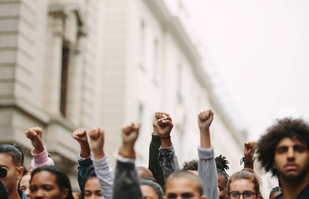

Yeni Hükümet Reformu Meclis'te Tartışılıyor:

Yeni hükümet reform paketi, mecliste hararetli tartışmalara neden oldu. Reformun ekonomik, sosyal ve çevresel etkileri ele alınırken, muhalefet partileri reformun sosyal adaletsizliklere yol açabileceğini savunuyor.
Türkiye Büyük Millet Meclisi (TBMM), hükümetin sunduğu kapsamlı reform paketini görüşmek üzere toplandı. Reform paketi, kamu harcamalarında önemli kesintiler yapılmasını, vergi sisteminde radikal değişiklikler getirilmesini ve çeşitli sosyal hizmetlerin yeniden yapılandırılmasını içeriyor. Hükümet yetkilileri, bu düzenlemelerin ekonomik büyümeyi hızlandıracağını ve kamu maliyesinde dengeyi sağlayacağını savunuyor.
Ancak, muhalefet partileri reformun, özellikle düşük gelirli vatandaşlar ve sosyal hizmetlerden faydalanan kesimler üzerinde olumsuz etkiler yaratacağını öne sürüyor. Ana muhalefet partisinin lideri, "Bu reform paketi, sosyal adaleti hiçe sayan bir girişimdir. İktidar, bütçe açığını kapatmak adına toplumun en zayıf kesimlerine zarar vermeyi göze alıyor" şeklinde konuştu. Meclis oturumlarında reform paketi hakkında yapılan sert eleştiriler, toplumda da geniş yankı uyandırdı. Sivil toplum kuruluşları ve sendikalar, paket hakkında protesto gösterileri düzenlemeyi planlıyor.

Reform paketinin en çok tartışılan unsurlarından biri, sağlık ve eğitim gibi temel hizmetlerde yapılacak kesintiler oldu. Bu kesintilerin, özellikle kırsal bölgelerde yaşayan vatandaşlar için erişim sorunları yaratabileceği ve mevcut eşitsizlikleri derinleştirebileceği belirtiliyor. Hükümet ise bu eleştirilere karşı, reformların uzun vadede ekonomik kalkınmayı destekleyeceğini ve tüm vatandaşların yaşam standartlarını yükselteceğini iddia ediyor. Mecliste devam eden görüşmelerin sonucu, ülkenin geleceği açısından kritik bir dönemeçte olduğunu gösteriyor.